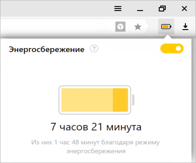
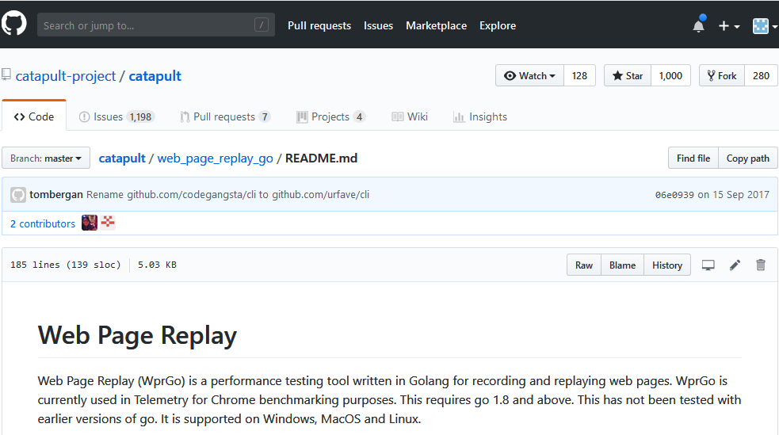

Суслик, TLS
и лиса-параноик
Олег Неумывакин
тестировщик @ Plesk
oneumyvakin@gmail.com
О себе
- 10+ лет тестирования
- Plesk > Yandex > Plesk
Энергосбережение в браузере
Тестирование энергопотребления браузера
- берем ноутбук
- отключаем от сети
- выполняем нагрузку в цикле
- ждем разряда батареи
- записываем время
Участники тестирования из требований PM'a
- Chrome
- Яндекс.Браузер
Тестирование энергопотребления
- берем ноутбук
- отключаем от сети
- выполняем нагрузку
- ждём разряда батареи <--- 6 часов
- записываем время
WebPageReplay
WebPageReplay: архив
{
"vk.com": {
"/search": "..."
},
"google.com": {
"/search?q=qwe": "..."
}
}
WebPageReplay: TLS
--ignore-certificate-errors-spki-list=<base64 subject>
Изменение требований
Участники тестирования
- Chrome
- Яндекс.Браузер
- Opera
- Firefox
Проблема
--ignore-certificate-errors-spki-list
| Браузер | Поддержка |
| Chrome |

|
| Я.Браузер |
|
| Opera |
|
| Firefox |

|
Нам срочно нужно другое решение!
Firefox
- установим сертификат в хранилище Firefox'a
Firefox
SSL_ERROR_BAD_CERT_DOMAIN
Решение №1
- генерируем сертификаты и ключи на лету
x509.Certificate {
NotBefore: time.Now(),
NotAfter: time.Now().Add(365 * 24 * time.Hour),
SerialNumber: 1,
Issuer: caCrt.Subject,
Subject: csr.Subject,
DNSNames: csr.DNSNames,
KeyUsage: x509.KeyUsageDigitalSignature,
ExtKeyUsage: []x509.ExtKeyUsage{x509.ExtKeyUsageAny},
}
Решение №1
- генерируем сертификаты и ключи на лету
http.Server{
Addr: ":443",
TLSConfig: tlsconfig,
}
Решение №1
- генерируем сертификаты и ключи на лету
http.Server{
Addr: ":443",
TLSConfig: tls.Config {
...
GetConfigForClient: func(*ClientHelloInfo) (*Config, error)
...
},
}
Решение №1
- генерируем сертификаты и ключи на лету
tls.Config{
Certificates: []tls.Certificate{
tls.Certificate{
Certificate: [][]byte{certBytes},
PrivateKey: privateKey,
}
},
}
Firefox
SEC_ERROR_INADEQUATE_CERT_TYPE"Неправильный" тип
x509.Certificate{
...
// Key Usage: Any Purpose
ExtKeyUsage: []x509.ExtKeyUsage{x509.ExtKeyUsageAny},
...
}
"Неправильный" тип: решение
x509.Certificate{
...
// Key Usage: SSL/TLS Web Server Authentication
ExtKeyUsage: []x509.ExtKeyUsage{x509.ExtKeyUsageServerAuth},
...
}
Firefox
SEC_ERROR_REUSED_ISSUER_AND_SERIALПроблема в Решении №1
x509.Certificate{
...
SerialNumber: 1,
...
}
Решение №2
- пре-генерируем все сертификаты/ключи заранее в виде файлов
- храним SerialNumber персистентно
- кэшируем, чтобы не ходить на диск
Решение №3
- один сертификат/ключ с одним SerialNumber
- все доменные имена добавим в Subject Alt Names
И все счастливы!
Выводы
- Chromium - кастомизируем
- Firefox - параноик
- Go - неожиданно прост:
-- проще чем решать проблемы браузеров
-- просто встроиться в существующий код